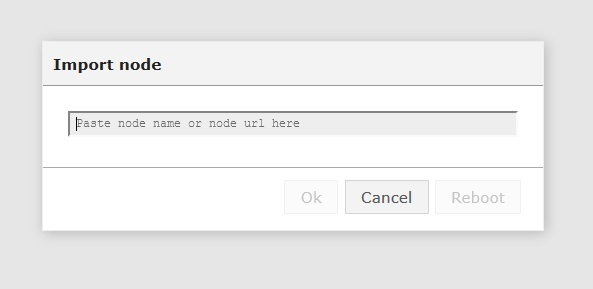

How to display a GPS position on a map with Owntracks
This documentation will explain and show how to use the Owntracks node and how to display GPS positions on a map.
What is OwnTracks ?
OwnTracks is an application that allows you to keep track of your own location. It’s available for IOS and Android devices.
Before going further, you must have the application Owntracks on your mobile phone (Android or iOS) and configurate it. Here is how to do:
How to install and configure OwnTracks
Where can I download OwnTracks ?
OwnTracks is a mobile application that can be downloaded on the Google Play Store or on the Apple App Store.
Prerequisites
To use OwnTracks, you obviously need a mobile(IOS/Android) phone and an internet connection. You also need to use a OwnTracks account.
During this example the username is ‘antoine’ but you can replace all the ‘antoine’ by another nickname
Configuration of Owntracks
Go to the preferences with the “options” button on the top right of the application.
Connection
Before trying to connect, make sure you have checked the option “Advanced connection preferences” in Preferences->Advanced->Advanced connection preferences:
This option allows you to turn off the SSL/TLS security, when you go to Preferences->Connection.
These credentials are needed to connect to your MQTT broker:
The host is the MQTT server you want to connect to, and the port is the one you’ll use to connect to this server. Username is needed too in order to connect but not used in the second part.
** You have to note the “Device ID” because you will use it for the configuration of the Owntracks node in the second part. **
Publish topic
You can configure your publish topic (default one is owntracks/username/device ID, but you can change it if you want). To do this, go to Preferences->Advanced->Publish topic, then, enter the topic you want to use to publish your OwnTracks notifications.
Subscribe topic
Once its done, you can define the topic you want to receive messages on. (Preferences->Advanced->Subscribe topic). Default one is owntracks/+/+.
Reporting
Please ensure that you have checked the “Automatic location reporting” option in Preferences->Advanced->Automatic location reporting:
It allows you to automatically send notifications.
Node-RED configuration
Owntracks
Firstly, install the ttb-node-owntracks via the Import->Node menu. You will see this window :

To install it, you have to write ttb-node-owntracks in the form of this window. Click OK button, wait a moment for the installation and when the Reboot button can be clicked, click on it !
When your ThingBox have restart, go in the Import->Library menu and you will see owntracks in the library list, click on it.
You will have these nodes like that:
Next you have to configure the Owntracks node (the blue one) by double clicking and you will see these:
For the topic you have to modify in order to have the same topic when you have configure the publish topic on your application (see the first part).
Then go to the advance part by clicking on it:
In this part you have to configure the client ID. ** Normally you have noted it in the first part. ** It is obtainable when you configure the Connection preferences of your smartphone application (see first part again).
Then click OK and Deploy the Nodes
Now go to thethingbox.local/api/map (you have to replace ‘thethingbox’ in the link by the name of your ThingBox) and you will see the location you want on a map like that:
To see a new position click on the Report button of the application Owntracks on your smartphone (these is the arrow on top the application) and refresh the map page.